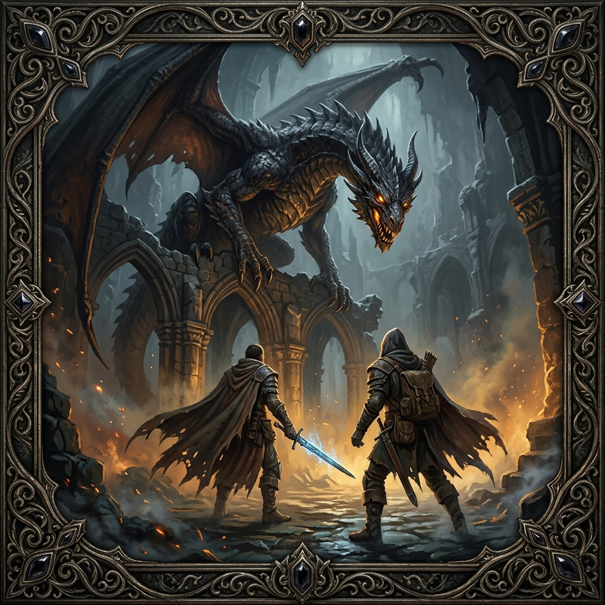
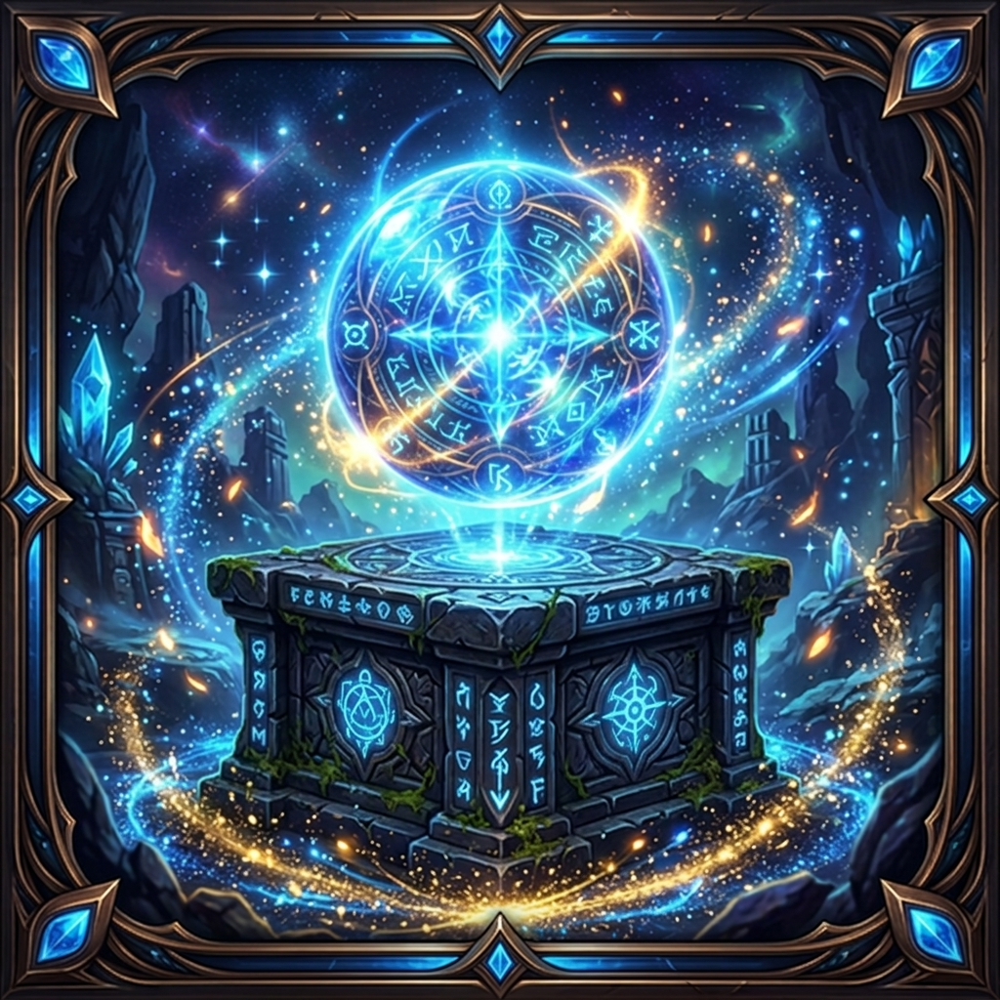

The Complete Tactical JRPG Engine & No-Code Studio Suite
Build deep 3D overworlds, first-person grid dungeon crawlers, turn-based tactical combat, and branching visual novels in Godot 4 without wrestling with spaghetti code. Fully driven by clean JSON databases and 45+ visual web tools.
The Four Pillars of Taos Game Maker
A unified engine combining classic RPG genres into a cohesive, production-ready framework built for Godot 4.
3D Overworld & Grid Exploration
High-performance tile-based overworld system with smooth grid movement, custom terrain biomes (grasslands, deserts, volcanic crags, snowy wastes), dynamic weather systems, fog of war, interactive Points of Interest (POIs), gathering nodes, and seamless city transitions.
First-Person Grid Dungeon Crawler
Classic 90-degree step-and-turn first-person dungeon exploration. Procedural and handcrafted modular rooms, interactive dungeon pieces, door gates, loot chests with lock-picking mechanics, hidden traps, atmospheric torch lighting, and boss encounters.
Turn-Based Tactical RPG Combat
Full-featured tactical battle engine with initiative queue, dynamic action menus, status effects, damage formulas, skill trees, item inventories, juice animations (screen shake, damage popups, hit flashes), and multi-phase boss mechanics.
Visual Novel & Branching Narrative
Expressive narrative engine featuring full-screen character portraits, expression transitions, branching player choices, global flag checks, quest hooks, profession synergy dialogs, and a responsive multi-language localization framework.
How It Works: Clean Data, Visual Speed
Never hardcode stats or quest logic in GDScript again. Taos Game Maker separates design data from engine code.
Pure Data-Driven Core
Every enemy, item, dialogue, quest, and map cell lives in human-readable JSON files. Zero proprietary binary formats.
45+ Local Web Studio Tools
Run the included zero-dependency Python server. Design worlds, dialogues, and dungeon levels with visual drag-and-drop tools.
Instant Live Reload in Godot
Save in the web editor and test immediately in Godot 4. The engine reloads data definitions on the fly.
Multiplatform Export Ready
Export natively to Windows, Linux, macOS, Android (APK/AAB), and Web (HTML5) with tuned export presets.
Built for Real Games: The Samiria Universe
Taos Game Maker isn't a theoretical prototype. It powers our own published commercial tactical RPG and fantasy literary franchise.

Echoes of Truth (Ecos de la Verdad)
A full tactical JRPG and first-person grid crawler built 100% with Taos Game Maker. Explore ancient temple ruins, uncover fractured cosmic lore, and battle mythical creatures across the realm of Samiria.

The Lazarus Saga (La Saga Lázaro)
The epic fantasy novel series that serves as the rich mythological foundation for the game's lore, ancient spheres, and celestial pantheon. Available worldwide on Amazon in both Spanish and English.
Ready to Build Your Dream Tactical RPG?
Get the complete Godot 4 framework, all 45+ Web Studio visual tools, complete starter assets, and multiplatform presets for a one-time purchase of $19.99. DRM-free and royalty-free.